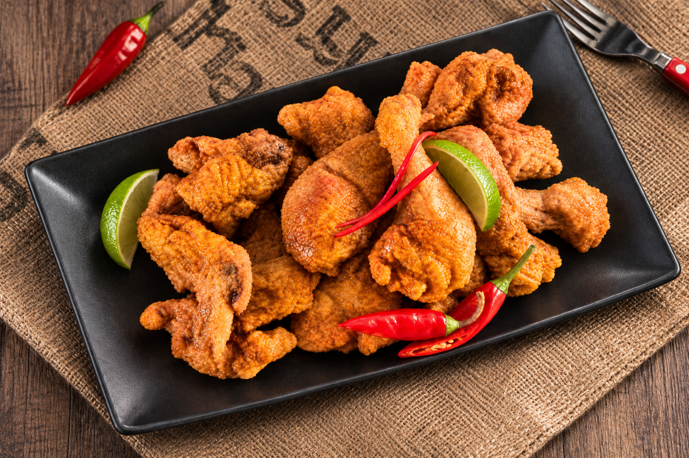

01매운양념치킨
기존 치킨 메뉴에 매콤한 양념의 선택지를 더한 시기.
매운양념치킨 출시두 마리로 시작된 이야기, 1999년부터 이어온 호식이의 여정
가족 모두가 넉넉하게 치킨을 나눌 수 없을까?
1990년대 말, 부담 없이 온 가족이 치킨을 즐기고 싶다는 바람에 귀 기울여
호식이두마리치킨은 1999년 두 마리 치킨 브랜드로 출발했습니다.
한 마리 가격에 두 마리의 만족을 전한다는 새로운 방식은
브랜드만의 이야기이자 성장의 출발점이 되었습니다.

두 마리 치킨의 시작부터 품질 인증, 해외 진출, 국내 매장 확대까지 브랜드의 중요한 순간들을 모았습니다.
호식이두마리치킨 브랜드 론칭 및 두 마리 치킨 체인사업본부 설립
맛의 선택지를 넓히며 대표 메뉴의 역사를 시작했습니다.
품질경영 시스템 관련 인증을 획득했습니다.
새로운 맛을 더하며 치킨 메뉴를 확장했습니다.
㈜하림과 공동 마케팅 협약을 체결했습니다.
일본 도쿄 신오쿠보점에서 해외 첫 매장을 열었습니다.
남산서울타워점을 통해 국내 1,000호점 기록을 세웠습니다.
기업 공식 연혁에 기록된 당시의 성과입니다. 현재 매장 수 또는 인증 현황을 의미하지 않습니다.
브랜드가 성장하는 동안 새로운 치킨이 등장했습니다. 대표 메뉴를 통해 호식이의 맛이 어떻게 확장되었는지 만나보세요.
기존 치킨 메뉴에 매콤한 양념의 선택지를 더한 시기.
매운양념치킨 출시간장과 매운맛을 결합한 메뉴로 맛의 폭을 넓힌 시기.
매운간장치킨 출시새로운 조합의 맛을 소개하며 메뉴의 변화를 이어간 시기.
타코마요치킨 출시1999년의 작은 아이디어는 치킨 메뉴의 발전, 국내 매장 확대, 해외 첫 매장 진출로 이어졌습니다.
호식이두마리치킨이 걸어온 시간을 살펴봤다면, 이제 브랜드가 중요하게 생각하는 가치를 만나보세요.
브랜드 철학 알아보기